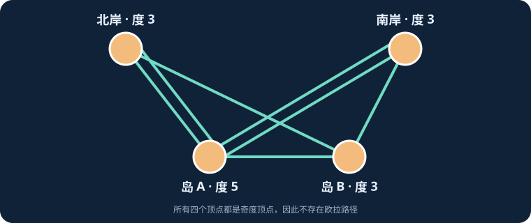

NETWORK SCIENCE / FOUNDATIONS
当连接关系决定系统行为，网络就成为一种可计算的语言。
从“事物”转向“关系”
一张地铁线路图、一群研究者的合作关系、细胞里的蛋白质相互作用，看起来属于不同领域。它们却共享一个关键特征：系统由许多实体组成，实体之间存在可以被明确描述的关系。只研究实体清单，无法回答“谁能到达谁”“哪些节点连接不同群体”“一个变化会沿哪些路径扩散”等问题；把关系显式建模，系统的组织方式才变得可分析。
网络科学研究由相互连接的个体构成的复杂系统，关注连接结构如何影响信息、资源、疾病、故障与行为的传播。它不是某一种网络的专门学科，而是把图论、统计物理、概率论、计算机科学和具体领域知识结合起来的研究方法。

网络的基本数学对象是图 。顶点（vertex/node）代表实体，边（edge/link）代表实体之间的关系。建模时必须先说清楚：一个顶点究竟代表一个人、一家公司还是一个网页？一条边代表“认识”“交易”“引用”还是“可以传输电力”？同一份原始数据，改变节点和边的含义，就会得到不同的网络。
网络科学的三个观察层次
结构：谁与谁相连？
描述节点、边、路径、社团、枢纽和网络整体形态。结构分析回答“系统如何组织”。
动力学：什么沿着边传播？
把信息、感染、资金、负载或意见放到网络上，研究传播速度、范围、阈值和反馈。
形成机制：网络如何出现？
研究增长、随机连接、偏好连接、空间限制与节点选择如何共同塑造观察到的结构。
这三个层次彼此关联，但不能混为一谈。观察到一个节点连接很多，并不能单独证明它“有影响力”；影响力还取决于边的含义、传播规则和节点状态。观察到网络具有短路径，也不能自动推出参与者能找到这条路径。结构是研究的起点，不是所有行为结论的替代品。
七桥问题：一个关系模型能回答什么？
1735 年，莱昂哈德·欧拉向圣彼得堡科学院提交了哥尼斯堡七桥问题的研究；论文于 1741 年刊出：能否从任意一块陆地出发，每座桥恰好经过一次？他没有计算桥梁长度，也没有考虑行走速度，而是把四块陆地抽象成四个顶点，把七座桥抽象成七条边。由此得到一个多重图：同一对顶点之间可以有多条边。
每个顶点的度（degree）是与它相接的边数。七桥图的四个顶点度数为 3、3、5、3，全部是奇数。欧拉路定理给出判据：在连通无向多重图中，若恰有 0 个奇度顶点，则存在欧拉回路；若恰有 2 个奇度顶点，则存在开放欧拉路径；奇度顶点超过 2 个时，不存在经过每条边恰好一次的路径。因此七桥问题无解。
亲自检查七桥图
点击按钮，按顶点度数应用欧拉路判据。这里检查的是“每条边恰好经过一次”，不是“每个顶点恰好访问一次”。
等待检查：七桥图有四个奇度顶点。
这次抽象展示了网络模型的价值：当问题关心的是连接方式，许多物理细节可以先被舍弃；但如果研究目标变成最短通勤时间，桥梁长度、道路容量和交通流量就必须重新进入模型。模型不是现实的完整复制，而是围绕问题保留必要信息。
四个改变网络研究的问题
- 1735 提交 / 1741 刊出 · 欧拉用顶点和边表示七桥关系，开创图论的经典问题化方法。
- 1959 · Erdős 与 Rényi提出系统研究随机图的数学框架，回答随机连边会产生怎样的整体结构。
- 1998 · Watts 与 Strogatz展示规则网络经过少量随机重连后，可以同时具有较高聚集性和较短路径。
- 1999 · Barabási 与 Albert用增长和优先连接解释一类网络中枢纽节点与重尾度分布的形成机制。
这些模型不是一条“旧理论被新理论取代”的直线。它们回答不同问题：随机图提供基线，小世界模型强调局部聚集与全局距离之间的关系，优先连接模型强调网络增长中的不均匀连接。现实网络可能同时具有多种机制，也可能不符合其中任何一个理想化模型。
什么时候值得把数据建成网络？
- 关系本身是研究对象，例如合作、引用、通信、交易、依赖或调控。
- 研究问题涉及多步可达、路径、群体边界、枢纽、桥接位置或传播。
- 关系具有方向、权重、时间或类型，需要显式记录这些语义。
如果数据只是若干互不关联的观测值，硬把它们连成图并不会自动产生洞见。网络分析的结论依赖建模假设：漏掉边会改变路径和社团；把有方向的关系当作无向边会改变可达性；把重复交易合并成一条边会丢失频次信息。每次分析都应先写清楚节点、边、方向、权重、时间范围和数据来源。
用代码建立一张小型合作网络
下面的例子把研究者作为顶点、共同署名作为无向边。它只演示图的构造与度数检查，不代表真实学术合作数据。
运行环境：Python 3.10+；安装依赖：python -m pip install "networkx>=3.3,<4"。
import networkx as nx
G = nx.Graph()
G.add_edges_from([
("Lin", "Mei"),
("Lin", "Jun"),
("Mei", "Jun"),
("Jun", "Kai"),
])
print("节点数:", G.number_of_nodes())
print("边数:", G.number_of_edges())
print("各节点度数:", dict(G.degree()))
# 无向图的握手定理：所有顶点度数之和等于边数的两倍。
assert sum(dict(G.degree()).values()) == 2 * G.number_of_edges()
assert nx.is_connected(G)
把网络看作一种建模语言
- 节点定义实体，边定义关系；两者的语义必须明确。
- 结构、动力学和形成机制是相互关联但不同的研究层次。
- 七桥问题说明，图模型可以把复杂情境压缩为可证明的结构命题。
- 模型的解释范围由建模假设决定，不能把结构指标直接当作行为结论。
参考资料
- Euler, L. (1741). Solutio problematis ad geometriam situs pertinentis. Commentarii academiae scientiarum Petropolitanae, 8, 128–140.
- Erdős, P. & Rényi, A. (1959). On random graphs. I. Publicationes Mathematicae Debrecen, 6, 290–297.
- Watts, D. J. & Strogatz, S. H. (1998). Collective dynamics of ‘small-world’ networks. Nature, 393, 440–442.
- Barabási, A.-L. & Albert, R. (1999). Emergence of scaling in random networks. Science, 286(5439), 509–512.
- Newman, M. (2010). Networks: An Introduction. Oxford University Press.